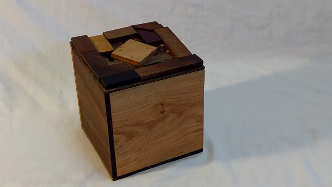
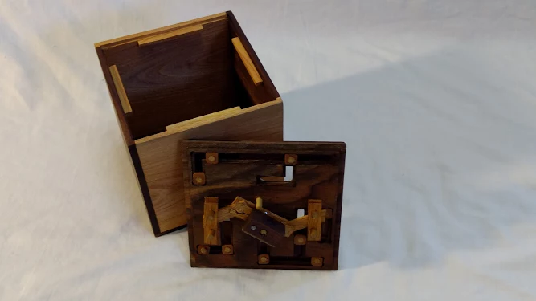
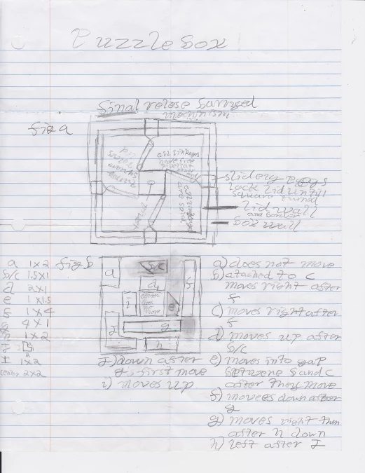
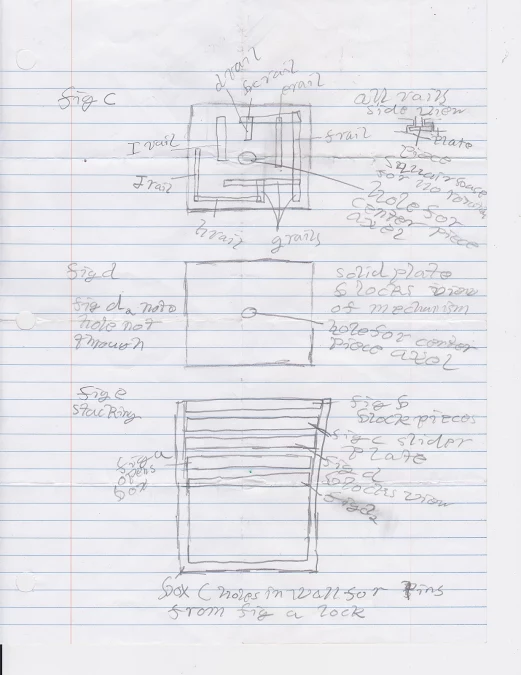
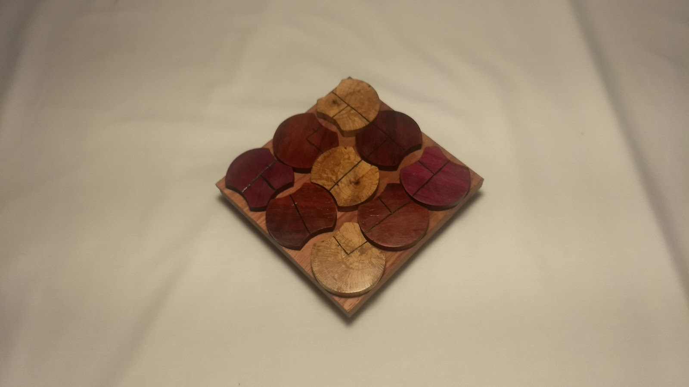
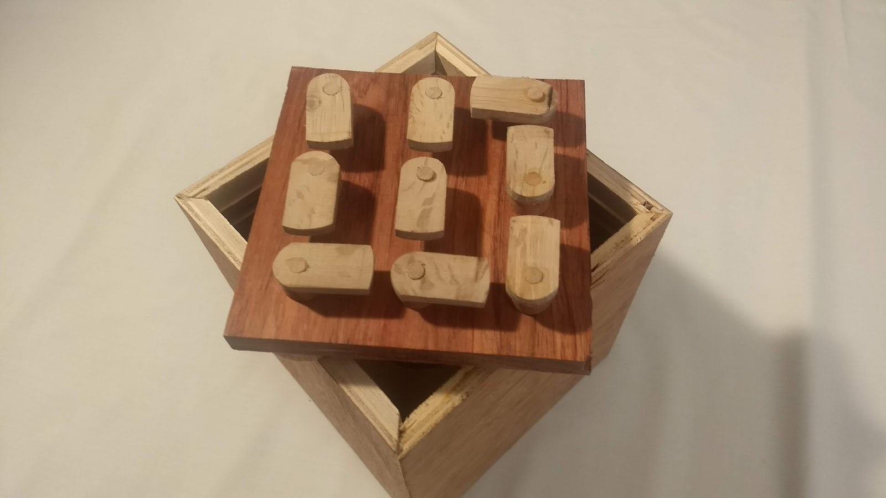
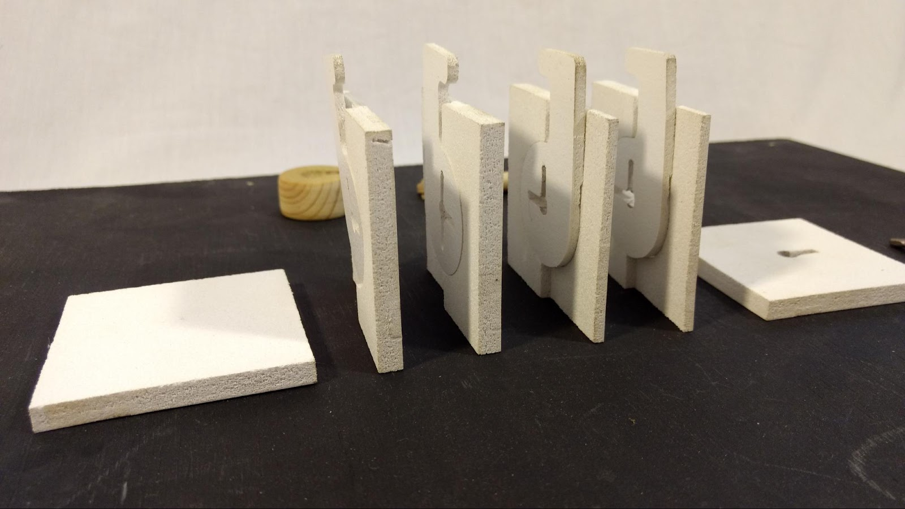
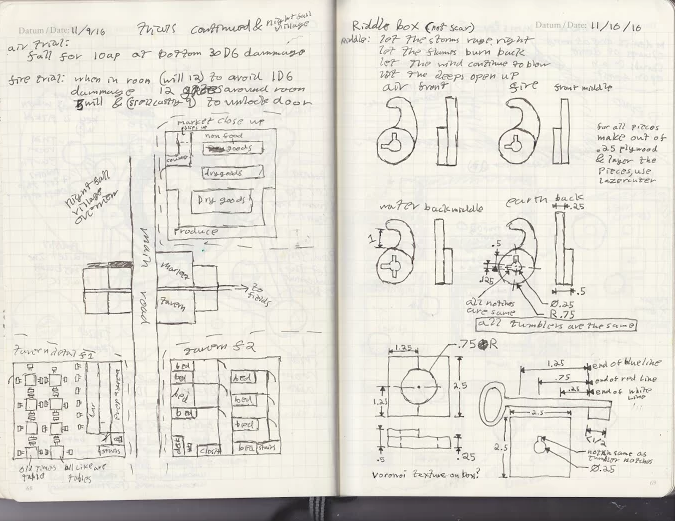

Sliding Blocks
Nine Circles
Riddle Box
Hidden Pad
- Initial design
This box was, as pictured, designed on binder paper. The actual design proccess largly involved sequentally adding new sliders blocking previous ones.
- Prototype
There was no prototype of this design, which turned out to be an oversight. While the design worked fine in theory the limitations of the materials caused some issues that could have been anticipated with a prototype.
- Fabrication
Most pieces of the box were made with a bandsaw and drill press, howver the top plate was cut on a 3 axis CNC router.
- Product
The final product works as adverised, slide the pieces around, and turn the center to open the box. There were some material strength issues with the crosslinks on the bottom, and the top plate is slightly warped, but overall I'm proud of the box.
- Reflection
Not a well run project buy the industry standerd, but a good result for a highschool freshman.
- Initial design
This projet was largly centered around asthetic concerns. I simply liked the Idea of having nine circles overlapping on the lid of the box.
- Prototype
The prototype for this box was a series of paper disks with cutouts and markings. A few different itterations were tried to find a good balance of interactablity and difficulty.
- Fabrication
I used a lathe to turn some purpleheart, padduk, and oak to the same diameter, then cut off slices. The lines on top were cut with a hacksaw and a file then filled with black paint.
- Product
The result of this product is a gorgeous lid, placed ontop of a thrown together plywood box. When I finished the lid i realized I had neglected to reserve some wood for the box itself.
- Reflection
I'm very happy with how this box turned out. It is astheticly pleasing (in my opinion), robust, and provides an interesting puzzle.
- Initial design
As uasual the idea took shape as a series of drawings in my ideas notebook. The goal here was to make a box that had a riddle as the clue to open it.
- Prototype
I tried making a few different prototypes, howver the shapes required proved hard to fabricate by hand.
- Fabrication
This locking mechinism is fully cut on a 3 axis CNC.
- Product
The final product is more of a prototype than a satisfactory end result, but it serves as a functional proof of concept.
- Reflection
The main thing I forgot to account for was the face on friction of the tumblers. The would be better made of a low friction material, or with some kind of bering
- Initial design
This box also attemps to turn a riddle into a lock, this time with the aid of a dial padlock embedded in the box.
- Prototype
There were two prototypes for this project. First a geometric paper design, to demonstrate that the geometry works as necessasary, and second a few itterations of the dial for astheic purposes.
- Fabrication
Most of this box was made using a bandsaw and a drill press, howver the engravings were done with a vainer chisel.
- Product
This is probably best box i've made so far, both in terms of asthetics, and functionality.
- Reflection
There are two minor issues with this box, first, the mountings being friction fits, while effective is not what I would have prefered, and second the lid sliding action tends to be a bit sticky.







